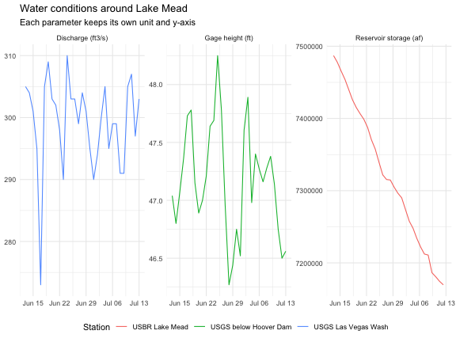

Mapping Lake Mead data across three EDR services
Source:vignettes/cross-endpoint-water-context.Rmd
cross-endpoint-water-context.RmdLake Mead sits within reach of several EDR services that describe the area in different ways. This workflow combines:
- population density and elevation grids from the Met Office Labs demonstrator;
- stage and discharge series from USGS waterdata; and
- USBR Lake Mead reservoir storage from the Western Water Datahub (WWDH).
The interactive map uses a Parameter control to switch between population and elevation without rebuilding the widget. USGS and USBR stations remain above either grid, and each marker opens a time-series chart with a CSV download. A faceted plot compares the three water variables on separate y-scales.
The saved data were retrieved on 2026-07-14. Package builds use this
snapshot and do not contact the live services. Met Office Labs is a
technical demonstrator and may change independently of
edr4r.
1. Create the clients and check the collections
library(edr4r)
library(ggplot2)
usgs <- edr_client(
"https://api.waterdata.usgs.gov/ogcapi/beta",
timeout = 60,
max_tries = 1
)
wwdh <- edr_client(
"https://api.wwdh.internetofwater.app",
timeout = 60,
max_tries = 1
)
met <- edr_client(
"https://labs.metoffice.gov.uk/edr",
timeout = 60,
max_tries = 1
)
study_bbox <- c(-115.30, 35.75, -114.55, 36.30)
# minx miny maxx maxyThe study area covers Las Vegas, Hoover Dam, and the western part of Lake Mead. Before downloading data, check that each collection still advertises the query used below:
capability_check <- data.frame(
endpoint = c("Met Office Labs", "Met Office Labs", "USGS waterdata", "WWDH"),
collection = c(
"global_pop_density", "copernicus_dem", "daily-edr", "rise-edr"
),
query = c("area", "area", "locations", "locations"),
supported = c(
edr_supports(met, "global_pop_density", query = "area"),
edr_supports(met, "copernicus_dem", query = "area"),
edr_supports(usgs, "daily-edr", query = "locations"),
edr_supports(wwdh, "rise-edr", query = "locations")
)
)
knitr::kable(capability_check)| endpoint | collection | query | supported |
|---|---|---|---|
| Met Office Labs | global_pop_density | area | TRUE |
| Met Office Labs | copernicus_dem | area | TRUE |
| USGS waterdata | daily-edr | locations | TRUE |
| WWDH | rise-edr | locations | TRUE |
2. Build two grid facets
The population collection requires an explicit CRS on its
area query. The four-row matrix is closed into a WKT
polygon by edr_area().
population_ring <- rbind(
c(study_bbox[1], study_bbox[2]),
c(study_bbox[3], study_bbox[2]),
c(study_bbox[3], study_bbox[4]),
c(study_bbox[1], study_bbox[4])
)
population_response <- edr_area(
met,
"global_pop_density",
coords = population_ring,
parameter_name = "Pop_Density",
crs = "EPSG:4326"
)
population <- covjson_to_tibble(population_response)
population$coverage_id <- "global_pop_density"
population$parameter_code <- population$parameter
population$parameter <- "2015 population density"
population$unit <- "people/km2"
stopifnot(
nrow(population) > 0L,
all(c("x", "y", "value") %in% names(population)),
any(is.finite(population$value), na.rm = TRUE)
)The population response is a regular 90 by 66 grid with 5,940 cells. The Copernicus DEM is much finer, so the refresh step samples its nearest cell at each population-grid center. The saved widget therefore carries two equally sized facets instead of millions of elevation cells.
elevation_response <- edr_area(
met,
"copernicus_dem",
coords = population_ring,
parameter_name = "Height",
crs = "EPSG:4326"
)
elevation_full <- covjson_to_tibble(elevation_response)
elevation_signature <- data.frame(
source = "Met Office / Copernicus elevation",
container = elevation_response$covjson$type,
domain = elevation_response$covjson$domain$domainType,
axes = paste(names(elevation_response$covjson$domain$axes), collapse = ", "),
coverages = 1L
)
nearest_grid_values <- function(source, target_x, target_y) {
source_x <- sort(unique(source$x))
source_y <- sort(unique(source$y))
ordered <- source[order(source$y, source$x), , drop = FALSE]
stopifnot(nrow(ordered) == length(source_x) * length(source_y))
value_matrix <- matrix(
ordered$value,
nrow = length(source_y),
ncol = length(source_x),
byrow = TRUE
)
target_x_unique <- unique(target_x)
target_y_unique <- unique(target_y)
source_x_index <- vapply(
target_x_unique,
function(value) which.min(abs(source_x - value)),
integer(1)
)
source_y_index <- vapply(
target_y_unique,
function(value) which.min(abs(source_y - value)),
integer(1)
)
value_matrix[cbind(
source_y_index[match(target_y, target_y_unique)],
source_x_index[match(target_x, target_x_unique)]
)]
}
elevation <- population
elevation$coverage_id <- "copernicus_dem"
elevation$parameter_code <- "Height"
elevation$parameter <- "Elevation above mean sea level"
elevation$parameter_label <- "Elevation above mean sea level"
elevation$unit <- "m"
elevation$value <- nearest_grid_values(
elevation_full,
population$x,
population$y
)
grid_facets <- rbind(population, elevation)
rm(elevation_full, elevation_response)
invisible(gc())
stopifnot(
nrow(elevation) == nrow(population),
all(is.finite(elevation$value)),
identical(sort(unique(grid_facets$parameter)), sort(c(
"2015 population density",
"Elevation above mean sea level"
)))
)Because both facets share the same x and y
centers, edr_map() can switch between them with its
built-in Parameter selector while keeping the station layers and map
extent fixed.
3. Retrieve the station series
Two USGS gauges provide a stage series below Hoover Dam and a
discharge series on Las Vegas Wash. USGS currently ignores
datetime on individual location requests, so the example
asks for 31 records and uses the dates actually returned.
usgs_index <- edr_locations(
usgs,
"daily-edr",
bbox = study_bbox,
limit = 100
)
selected_usgs_ids <- c("USGS-09421500", "USGS-09419800")
usgs_sites <- usgs_index[
match(selected_usgs_ids, usgs_index$id),
c("id", "monitoring_location_name", "geometry")
]
hoover_response <- edr_location(
usgs,
"daily-edr",
location_id = "USGS-09421500",
parameter_name = "00065",
limit = 31
)
hoover_stage <- covjson_to_tibble(hoover_response)
hoover_stage <- hoover_stage[order(hoover_stage$datetime), ]
hoover_stage$parameter_code <- hoover_stage$parameter
hoover_stage$parameter <- "Gage height"
hoover_stage$coverage_id <- paste0("usgs:", hoover_stage$coverage_id)
wash_response <- edr_location(
usgs,
"daily-edr",
location_id = "USGS-09419800",
parameter_name = "00060",
limit = 31
)
wash_flow <- covjson_to_tibble(wash_response)
wash_flow <- wash_flow[order(wash_flow$datetime), ]
wash_flow$parameter_code <- wash_flow$parameter
wash_flow$parameter <- "Discharge"
wash_flow$coverage_id <- paste0("usgs:", wash_flow$coverage_id)
water_dates <- intersect(
as.Date(hoover_stage$datetime, tz = "UTC"),
as.Date(wash_flow$datetime, tz = "UTC")
)
stopifnot(length(water_dates) > 0L)WWDH treats the interval end as exclusive, so adding one day includes
the last USGS date. Location 3514 is the USBR/RISE Lake
Mead storage series.
water_interval <- paste(
min(water_dates),
max(water_dates) + 1,
sep = "/"
)
storage_response <- edr_location(
wwdh,
"rise-edr",
location_id = "3514",
datetime = water_interval,
parameter_name = "3"
)
storage <- covjson_to_tibble(storage_response)
storage <- storage[order(storage$datetime), ]
storage <- storage[
as.Date(storage$datetime, tz = "UTC") %in% water_dates,
]
storage$parameter_code <- storage$parameter
storage$parameter <- "Reservoir storage"
storage$coverage_id <- paste0("wwdh:", storage$coverage_id)
stopifnot(
nrow(hoover_stage) > 0L,
nrow(wash_flow) > 0L,
nrow(storage) > 0L,
all(vapply(
list(hoover_stage, wash_flow, storage),
function(x) all(c("datetime", "value", "unit") %in% names(x)),
logical(1)
))
)The WWDH location index currently ignores spatial/page limits, so the USBR marker is constructed from the coordinates already carried by the returned coverage instead of downloading the full index.
usbr_site <- sf::st_as_sf(
data.frame(
id = "USBR-RISE-3514",
monitoring_location_name =
"Lake Mead Hoover Dam and Powerplant (USBR via WWDH/RISE)",
longitude = storage$x[[1]],
latitude = storage$y[[1]]
),
coords = c("longitude", "latitude"),
crs = 4326
)
usgs_popup_data <- list(
"USGS-09421500" = hoover_stage,
"USGS-09419800" = wash_flow
)
usbr_popup_data <- list(
"USBR-RISE-3514" = storage
)4. Compare the water variables in separate facets
Stage, discharge, and storage have different units and ranges.
edr_plot() uses the parameter metadata to put each variable
in its own panel and include the unit in the strip label. The shared
date axis still makes it easy to see which observations cover the same
period.
series_for_plot <- function(data, station) {
out <- data[, c(
"coverage_id", "parameter", "unit", "datetime", "value"
)]
out$station <- station
out
}
water_series <- rbind(
series_for_plot(hoover_stage, "USGS below Hoover Dam"),
series_for_plot(wash_flow, "USGS Las Vegas Wash"),
series_for_plot(storage, "USBR Lake Mead")
)
water_facets <- edr_plot(
water_series,
group = "station",
facet = "parameter",
scales = "free_y",
geom = "line",
view = "time"
) +
labs(
title = "Water conditions around Lake Mead",
subtitle = "Each parameter keeps its own unit and y-axis",
colour = "Station"
)
water_facets
Stage, discharge, and reservoir storage use separate panels and y-axis scales.
5. Inspect the coverage shapes
The map combines two gridded coverages with three temporal point coverages. The container and domain metadata come directly from the responses:
coverage_signature <- function(source, response) {
body <- response$covjson
coverages <- if (identical(body$type, "CoverageCollection")) {
body$coverages
} else {
list(body)
}
domain_types <- vapply(coverages, function(coverage) {
domain_type <- coverage$domainType
if (is.null(domain_type) || length(domain_type) == 0L) {
domain_type <- coverage$domain$domainType
}
if (is.null(domain_type) || length(domain_type) == 0L) {
"not declared"
} else {
as.character(domain_type[[1]])
}
}, character(1))
axes <- unique(unlist(lapply(
coverages,
function(coverage) names(coverage$domain$axes)
)))
data.frame(
source = source,
container = body$type,
domain = paste(unique(domain_types), collapse = ", "),
axes = paste(axes, collapse = ", "),
coverages = length(coverages)
)
}
signatures <- rbind(
coverage_signature("Met Office population", population_response),
elevation_signature,
coverage_signature("USGS Hoover stage", hoover_response),
coverage_signature("USGS Las Vegas Wash", wash_response),
coverage_signature("WWDH / USBR storage", storage_response)
)
knitr::kable(signatures)| source | container | domain | axes | coverages |
|---|---|---|---|---|
| Met Office population | Coverage | Grid | x, y | 1 |
| Met Office / Copernicus elevation | Coverage | Grid | x, y | 1 |
| USGS Hoover stage | Coverage | PointSeries | t, x, y | 1 |
| USGS Las Vegas Wash | Coverage | PointSeries | t, x, y | 1 |
| WWDH / USBR storage | CoverageCollection | PointSeries | x, y, t | 1 |
snapshot <- data.frame(
layer = c(
"Met Office population",
"Met Office / Copernicus elevation",
"USGS Hoover stage",
"USGS Las Vegas Wash",
"WWDH / USBR storage"
),
rows = c(
nrow(population),
nrow(elevation),
nrow(hoover_stage),
nrow(wash_flow),
nrow(storage)
),
start = c(
"static 2015",
"static elevation",
format(min(hoover_stage$datetime), "%Y-%m-%d", tz = "UTC"),
format(min(wash_flow$datetime), "%Y-%m-%d", tz = "UTC"),
format(min(storage$datetime), "%Y-%m-%d", tz = "UTC")
),
end = c(
"static 2015",
"static elevation",
format(max(hoover_stage$datetime), "%Y-%m-%d", tz = "UTC"),
format(max(wash_flow$datetime), "%Y-%m-%d", tz = "UTC"),
format(max(storage$datetime), "%Y-%m-%d", tz = "UTC")
),
unit = c(
"people/km2",
"m",
unique(hoover_stage$unit)[1],
unique(wash_flow$unit)[1],
unique(storage$unit)[1]
)
)
knitr::kable(snapshot)| layer | rows | start | end | unit |
|---|---|---|---|---|
| Met Office population | 5940 | static 2015 | static 2015 | people/km2 |
| Met Office / Copernicus elevation | 5940 | static elevation | static elevation | m |
| USGS Hoover stage | 31 | 2026-06-13 | 2026-07-13 | ft |
| USGS Las Vegas Wash | 31 | 2026-06-13 | 2026-07-13 | ft3/s |
| WWDH / USBR storage | 30 | 2026-06-13 | 2026-07-12 | af |
6. Build the map with selectable grid facets
edr_map() recognizes the two parameter values and adds a
selector for them. edr_add_stations() then places
independently styled source groups above the active grid. Coverage cells
live in a lower Leaflet pane, so the station markers stay visible and
clickable while the grid facet changes.
lake_mead_map <- edr_map(
grid_facets,
mode = "grid",
controls = TRUE,
initial = list(parameter = "2015 population density"),
grid_opacity = 0.58,
grid_transform = "sqrt",
tile_provider = "CartoDB.Positron"
)
lake_mead_map <- edr_add_stations(
lake_mead_map,
usbr_site,
data = usbr_popup_data,
popup = "plot+csv",
id_col = "id",
label_col = "monitoring_location_name",
group = "USBR / WWDH",
matched_color = "#0072B2",
marker_radius = 9,
legend = FALSE
)
lake_mead_map <- edr_add_stations(
lake_mead_map,
usgs_sites,
data = usgs_popup_data,
popup = "plot+csv",
id_col = "id",
label_col = "monitoring_location_name",
group = "USGS",
matched_color = "#D55E00",
marker_radius = 6,
legend = FALSE
)
lake_mead_map <- leaflet::addLayersControl(
lake_mead_map,
overlayGroups = c("USGS", "USBR / WWDH"),
options = leaflet::layersControlOptions(collapsed = TRUE)
)
lake_mead_map <- leaflet::addControl(
lake_mead_map,
html = paste0(
"<div style='background:rgba(255,255,255,.92);padding:7px;",
"border-radius:4px;font:12px system-ui,sans-serif'>",
"<strong>Lake Mead context</strong><br>",
"Choose a grid facet above<br>Click a station for its time series",
"</div>"
),
position = "bottomleft"
)
dir.create(
"cross-endpoint-water-context-full",
showWarnings = FALSE,
recursive = TRUE
)
edr_save_html(
lake_mead_map,
"cross-endpoint-water-context-full/lake-mead-map.html",
selfcontained = TRUE
)The website build renders the interactive widget below. The package vignette uses a faceted static preview of the same precomputed layers.
Use the Parameter selector to change the grid while leaving the station layers in place. The larger blue USBR/WWDH marker and the smaller orange USGS marker near Hoover Dam overlap at the initial extent; the layer control or a closer zoom makes each one easier to open. The Las Vegas Wash gauge is farther west.
The same widget can be written anywhere with:
edr_save_html(lake_mead_map, "lake-mead-edr-layers.html")The executable source is retained at
vignettes/cross-endpoint-water-context.Rmd.orig. Refresh
the baked data, static preview, and site widget deliberately with: